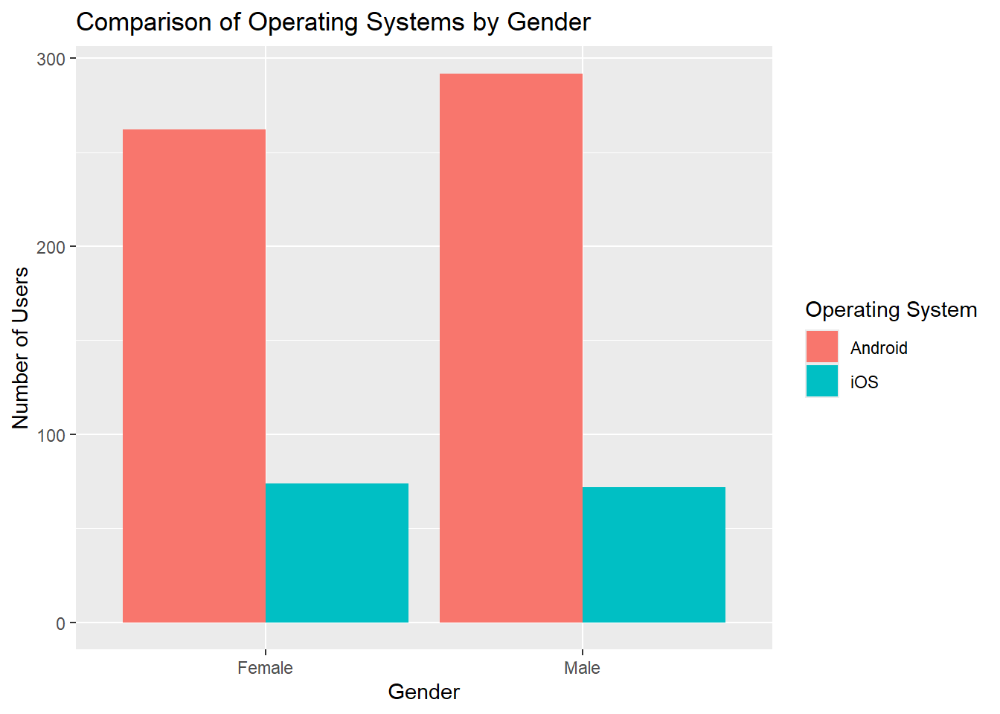
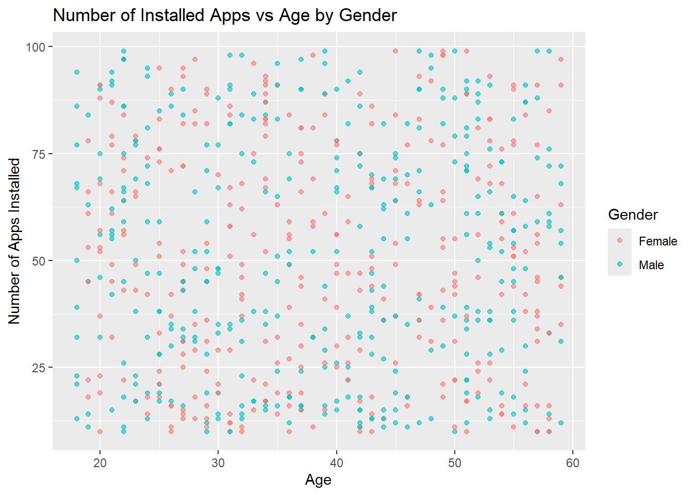
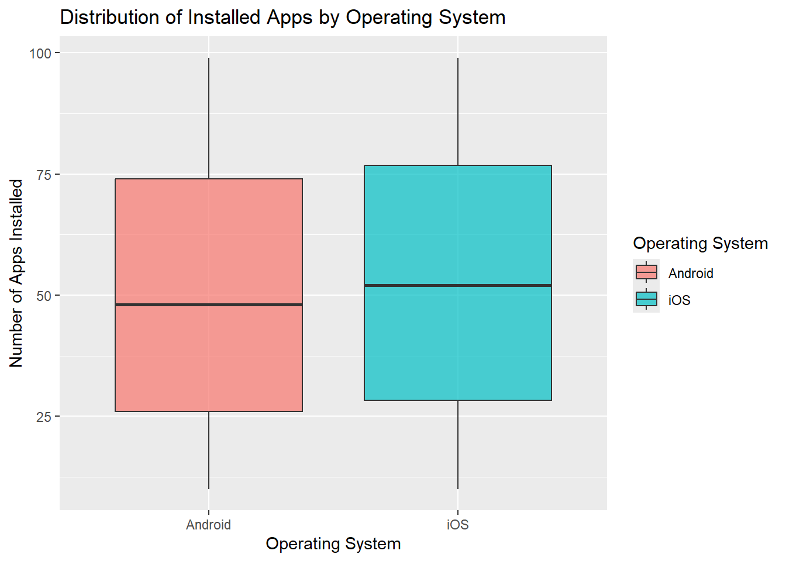
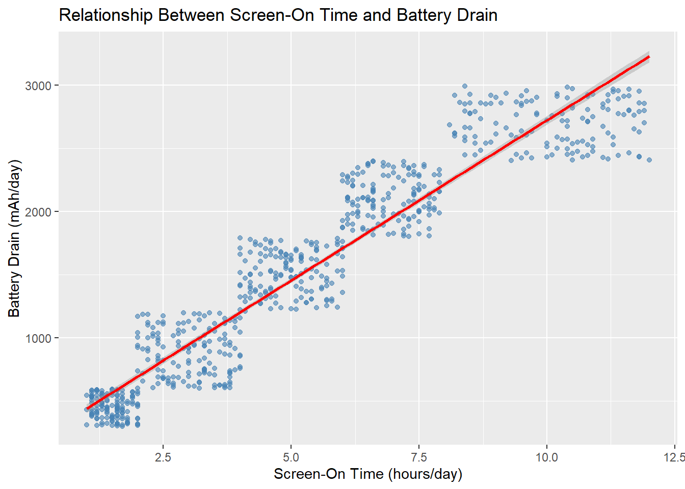

library(tidyverse)
library(readr)
library(jsonlite)
library(dplyr)Project2
import necessary libraries
load data
mobile_device_data <- read_csv("data/user_behavior_dataset.csv") |>
as_tibble() |>
rename(
user_id = `User ID`,
device_model = `Device Model`,
operating_system = `Operating System`,
app_usage_time = `App Usage Time (min/day)`,
screen_on_time = `Screen On Time (hours/day)`,
battery_drain = `Battery Drain (mAh/day)`,
num_app_installed = `Number of Apps Installed`,
data_usage = `Data Usage (MB/day)`,
age = Age,
gender = Gender,
user_behavior_class = `User Behavior Class`
)
mobile_device_data# A tibble: 700 × 11
user_id device_model operating_system app_usage_time screen_on_time
<dbl> <chr> <chr> <dbl> <dbl>
1 1 Google Pixel 5 Android 393 6.4
2 2 OnePlus 9 Android 268 4.7
3 3 Xiaomi Mi 11 Android 154 4
4 4 Google Pixel 5 Android 239 4.8
5 5 iPhone 12 iOS 187 4.3
6 6 Google Pixel 5 Android 99 2
7 7 Samsung Galaxy S21 Android 350 7.3
8 8 OnePlus 9 Android 543 11.4
9 9 Samsung Galaxy S21 Android 340 7.7
10 10 iPhone 12 iOS 424 6.6
# ℹ 690 more rows
# ℹ 6 more variables: battery_drain <dbl>, num_app_installed <dbl>,
# data_usage <dbl>, age <dbl>, gender <chr>, user_behavior_class <dbl>colnames(mobile_device_data) [1] "user_id" "device_model" "operating_system"
[4] "app_usage_time" "screen_on_time" "battery_drain"
[7] "num_app_installed" "data_usage" "age"
[10] "gender" "user_behavior_class"create factor versions of some variables to use
mobile_device_data <- mobile_device_data |>
mutate(across(
c(user_id, device_model, operating_system, gender, user_behavior_class),
as.factor
))create a one way contingency table
one_way_table <- mobile_device_data |>
group_by(gender) |>
drop_na(gender) |>
summarize(count = n())
one_way_table# A tibble: 2 × 2
gender count
<fct> <int>
1 Female 336
2 Male 364create a two way contingency table - comparing which operating system is used more often between males and females
two_way_table <- mobile_device_data |>
group_by(operating_system, gender) |>
drop_na(operating_system, gender) |>
summarize(count = n()) |>
pivot_wider(names_from = gender, values_from = count, values_fill = 0)
two_way_table# A tibble: 2 × 3
# Groups: operating_system [2]
operating_system Female Male
<fct> <int> <int>
1 Android 262 292
2 iOS 74 72summarize numerical variables
mobile_device_data |>
summarise(across(
where(is.numeric),
list(
mean = mean,
sd = sd,
median = median,
max = max
),
.names = "{.col}.{.fn}"
))# A tibble: 1 × 24
app_usage_time.mean app_usage_time.sd app_usage_time.median app_usage_time.max
<dbl> <dbl> <dbl> <dbl>
1 271. 177. 228. 598
# ℹ 20 more variables: screen_on_time.mean <dbl>, screen_on_time.sd <dbl>,
# screen_on_time.median <dbl>, screen_on_time.max <dbl>,
# battery_drain.mean <dbl>, battery_drain.sd <dbl>,
# battery_drain.median <dbl>, battery_drain.max <dbl>,
# num_app_installed.mean <dbl>, num_app_installed.sd <dbl>,
# num_app_installed.median <dbl>, num_app_installed.max <dbl>,
# data_usage.mean <dbl>, data_usage.sd <dbl>, data_usage.median <dbl>, …6 plots barplot
mobile_barplot <- mobile_device_data |>
group_by(gender, operating_system) |>
summarize(count = n(), .groups = "drop")
ggplot(mobile_barplot, aes(x = gender, y = count, fill = operating_system)) +
geom_bar(stat = "identity", position = "dodge") +
xlab("Gender") +
ylab("Number of Users") +
ggtitle("Comparison of Operating Systems by Gender") +
scale_fill_discrete(name = "Operating System")
scatter plot
ggplot(mobile_device_data, aes(x = age, y = num_app_installed, color = gender)) +
geom_point(alpha = 0.6) +
xlab("Age") +
ylab("Number of Apps Installed") +
ggtitle("Number of Installed Apps vs Age by Gender") +
scale_color_discrete(name = "Gender") 
boxplot
ggplot(mobile_device_data, aes(x = operating_system, y = num_app_installed, fill = operating_system)) +
geom_boxplot(alpha = 0.7, outlier.color = "red", outlier.alpha = 0.6) +
xlab("Operating System") +
ylab("Number of Apps Installed") +
ggtitle("Distribution of Installed Apps by Operating System") +
scale_fill_discrete(name = "Operating System") 
line graph
ggplot(mobile_device_data, aes(x = screen_on_time, y = battery_drain)) +
geom_point(alpha = 0.6, color = "steelblue") +
geom_smooth(method = "lm", se = TRUE, color = "red") +
xlab("Screen-On Time (hours/day)") +
ylab("Battery Drain (mAh/day)") +
ggtitle("Relationship Between Screen-On Time and Battery Drain") 
stacked bar graoh
# Aggregate total apps per OS and gender
mobile_device_data |>
group_by(operating_system, gender) |>
summarise(total_apps = sum(num_app_installed, na.rm = TRUE), .groups = "drop") |>
ggplot(aes(x = operating_system, y = total_apps, fill = gender)) +
geom_col(position = "dodge") + # side-by-side bars
labs(
x = "Operating System",
y = "Total Number of Apps Installed",
fill = "Gender",
title = "Total Apps Installed by OS and Gender"
)
heat map
mobile_device_data |>
mutate(age_group = cut(age, breaks = c(0,20,30,40,50,60,100), right = FALSE)) |>
group_by(age_group, operating_system) |>
summarise(avg_screen_time = mean(screen_on_time, na.rm = TRUE), .groups = "drop") |>
ggplot(aes(x = operating_system, y = age_group, fill = avg_screen_time)) +
geom_tile(color = "white") +
scale_fill_gradient(low = "lightblue", high = "darkblue") +
labs(
x = "Operating System",
y = "Age Group",
fill = "Avg Screen Time (hrs/day)",
title = "Screen Time by Age Group and Operating System"
)